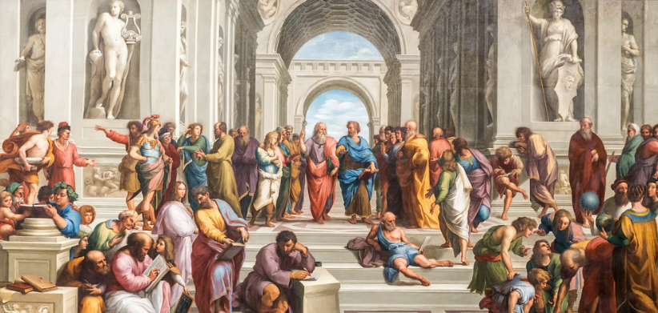
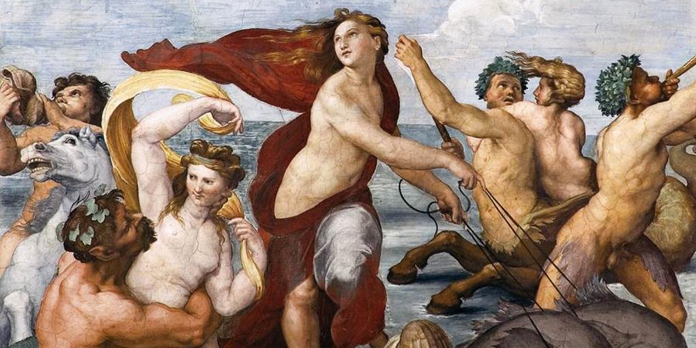
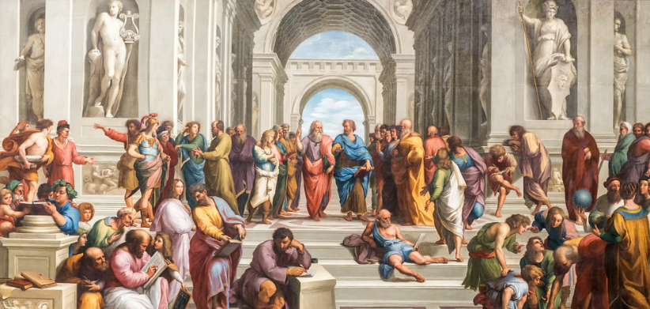
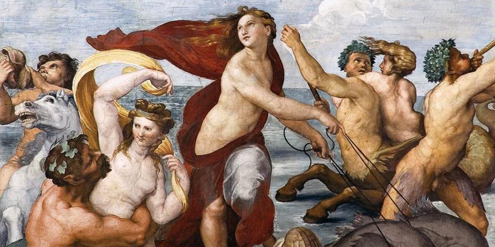

Rafael Sanzio fue un pintor y arquitecto renacentista italiano nacido en 1483 en Urbino, Italia. Es considerado uno de
los más grandes artistas de la época renacentista y uno de los más importantes representantes del Renacimiento italiano.
Rafael comenzó su carrera como aprendiz de su padre, que era un artista local, y más tarde trabajó en la corte de la
familia de los Médici en Florencia, donde aprendió de algunos de los más grandes artistas de la época, incluyendo
Leonardo da Vinci y Miguel Ángel.
Rafael es conocido por su habilidad para combinar la tradición clásica con la nueva forma renacentista de arte, y por su capacidad para crear obras de arte con una gran sensibilidad y emotividad. Algunas de sus obras más famosas incluyen La Escuela de Atenas, La Anunciación y La Galatea.
Además de su trabajo como pintor, Rafael también trabajó como arquitecto y diseñó varios edificios importantes, incluyendo la Logia de la Villa Farnesina en Roma.
 



PRUEBA A DESLIZAR LA IMAGEN
- Estilo de arte: Rafael es conocido por su estilo elegante y refinado, que combina elementos de la tradición clásica con
una nueva forma renacentista de arte. Sus obras son famosas por su realismo, detalle y sensibilidad, y por su capacidad
para transmitir una gran cantidad de emoción y sentimiento.
- Colaboración con la corte papal: Rafael trabajó para la corte papal en Roma durante gran parte de su carrera, y su
trabajo en la corte tuvo un gran impacto en su desarrollo como artista. Trabajó en una serie de proyectos importantes
para el papa Julio II, incluyendo la decoración de la biblioteca Vatican Palace y la creación de una serie de frescos en
la Capilla Sixtina.
- El taller de Rafael: Rafael dirigió un taller muy activo durante su vida, y muchos de sus aprendices más talentosos,
como Giulio Romano y Perino del Vaga, se convirtieron en artistas importantes en su propio derecho. Este taller fue un
lugar de colaboración y experimentación, y Rafael solía trabajar en colaboración con sus aprendices en proyectos
importantes.
- Influencia en el arte: La obra de Rafael ha tenido una gran influencia en el arte y la cultura a lo largo de los siglos.
Ha sido estudiada y admirada por artistas de todas las épocas, y su estilo elegante y refinado ha sido imitado y
enriquecido por muchos otros artistas. Su trabajo ha sido una fuente de inspiración para muchos, y su legado continúa
siendo una parte importante de la historia del arte y la cultura.
En resumen, Rafael Sanzio es uno de los más grandes y talentosos artistas de la época renacentista y su legado sigue
siendo una fuente de inspiración y admiración para muchos. Su estilo elegante y refinado, combinado con su habilidad
para transmitir una gran cantidad de emoción y sentimiento, lo convierten en uno de los más importantes representantes
de la época renacentista.